شبنم رضاپور
کسی که PDFها را راضی کرد محتوایشان را بیکموکاست لو بدهند.
این جزوه با استفاده از جزوهساز پاپیروس و به صورت خودکار تولید شده است. ممکن است شامل خطا یا برداشت نادرست باشد و نیازمند بررسی و بازبینی مجدد است.
این جلسه به مروری بر تولید و تمایز گلبول قرمز، تغییرات سلولی در جریان اریتروپوئزیس و ساختار و انواع هموگلوبین، کلاسترهای ژنی Globin و سنتز Heme میپردازد. همچنین کمخونی سیدروبلاستیک، مسمومیت با سرب، پورفیریا و انواع هموگلوبین پاتولوژیک بررسی میشوند. فانکشن هموگلوبین (Function of Hemoglobin) برای جلسه بعد عنوان شد.
مراحل تکامل گلبول قرمز بهترتیب عبارتاند از:
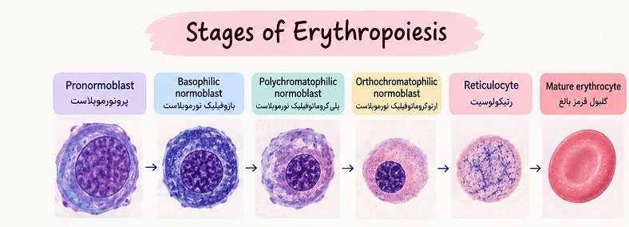
مراحل تکامل گلبول قرمزدر طول تمایز، هسته از نظر مورفولوژی کوچکتر و فشردهتر میشود و فعالیت آن کاهش مییابد. در مراحل اولیه، هسته بزرگ است و ژنها در دسترساند؛ بنابراین رونویسی از ژنها انجام میشود. سلول تحتتأثیر عوامل سلولی و محیطی موجود در ریزمحیط (Microenvironment) بهسمت رده اریتروئیدی هدایت شده است. در نتیجه، ژنهای مرتبط با سلول نهایی بیان میشوند.
ازآنجاکه گلبول قرمز سرشار از هموگلوبین است، ژنهای مرتبط با تولید هموگلوبین بیان میشوند. همچنین ژنهای پروتئینهای غشایی گلبول قرمز باید بیان شوند تا این پروتئینها در غشا جای بگیرند و ساختار غشا کامل شود. بنابراین، بیان ژنها در راستای تکامل سلول است. با انجام کار هسته، هسته بهتدریج فشردهتر میشود و کارایی خود را از دست میدهد.
در مرحله ارتوکروماتوفیلیک نورموبلاست، هسته از سلول بیرون انداخته میشود. در این فرایند، میتوکندریها هسته را احاطه میکنند و با وارد کردن فشار، آن را به خارج از سلول میرانند؛ پس از خروج هسته، میتوکندریها نیز به تدریج از سلول حذف میشوند.
گلبول قرمز باید اکسیژن را جابهجا کند و در طول عمر خود، حدود ۸۰ تا ۱۲۰ روز، نزدیک به ۲۰۰ کیلومتر از عروق را طی میکند؛ بنابراین نباید بار اضافی داشته باشد. همچنین برای رساندن اکسیژن به سلولهای دیگر، خودش اکسیژن مصرف نمیکند و متابولیسم آن از مسیرهای بیهوازی (Anaerobic) انجام میشود.
با بیان ژنها و ترجمهٔ آنها، سیتوپلاسم سلول نیز دچار تغییر میشود. سیتوپلاسم سلولهای نارَس آبیرنگ است. در ردهٔ اریتروئیدی، با ساختهشدن هموگلوبین، این پروتئین با بخش ائوزین در رنگآمیزی رایت (Wright stain) رنگ میگیرد؛ بنابراین رنگ سیتوپلاسم بهتدریج از آبی بهسمت نارنجی تغییر میکند. در مرحلهای، سلول بهصورت پلیکروم (Polychromatic)، یعنی چندرنگ، دیده میشود. با افزایش میزان هموگلوبین، رنگ سلول در نهایت به نارنجی تا قرمز تغییر میکند و سلول به گلبول قرمز تبدیل میشود.
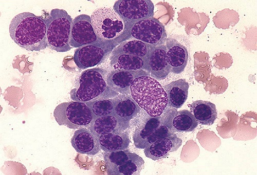
جزیره اریتروبلاستیک (Erythroblastic island)در مراحل اریتروپوئزیس، هموگلوبین، پروتئینهای غشایی و آنزیمهای موردنیاز گلبول قرمز ساخته میشوند. ماکروفاژ به اریتروبلاست آهن و ترکیبات دیگر، ازجمله ویتامینها، میرساند. ویتامین E در صورت نیاز از مواد موجود در گردش خون جذب میشود. مکملهای دیگری مانند روی (Zinc) نیز در صورت نیاز جذب میشوند. به این ترتیب، سلول در جریان تمایز، ترکیبات موردنیاز خود را دریافت میکند. گلبول قرمز بالغ مجموعهای محدود از آنزیمها، پروتئینهای غشایی و هموگلوبین را در خود دارد که برای حفظ عملکرد و بقای آن ضروری هستند و در نهایت، وظیفهٔ انتقال اکسیژن به بافتهای بدن را بر عهده دارد.
تصویر زیر با استفاده از یک میکروسکوپ الکترونی گرفته شده است. در این تصویر، ارتونورموبلاست در حال خارج کردن هستهٔ خود است. پس از خروج هسته، سلول در محل خروج آن ظاهری نامنظم دارد که بهتدریج منظم میشود. سلول در ابتدا رتیکولوسیت (Reticulocyte) است و سپس به گلبول قرمز بالغ (Erythrocyte) تبدیل میشود. هستهٔ خارجشده، لایهٔ نازکی از سیتوپلاسم را نیز در اطراف خود دارد. ماکروفاژها این بخش جداشده را جذب و پاکسازی میکنند و در این فرایند، از جمله در بازیافت آهن و انتقال آن به سلولهای در حال تمایز، نقش دارند.
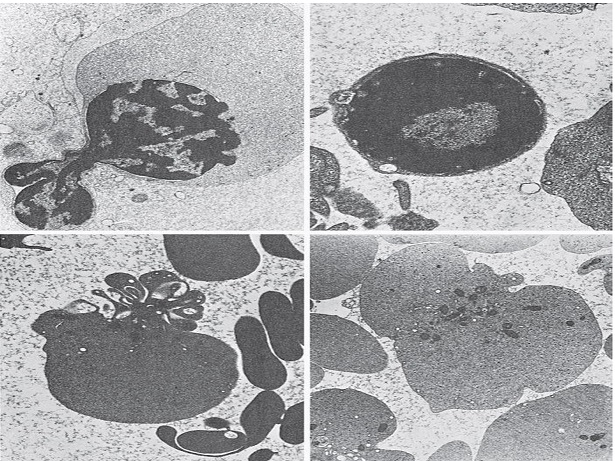
گلبول قرمز بالغ، مانند دیگر سلولهای خونی، باید از مغز استخوان (Bone marrow) وارد جریان خون شود. یکی از سلولهای استرومایی مغز استخوان، سلول اندوتلیالی (Endothelial cell) است. محل تکمیل خونسازی در مغز استخوان، دارای حوضچهها یا سینوزوئیدها (Sinusoid) است. در تصویر الکترونمیکروسکوپی از داخل رگ، اتصالات اندوتلیالی نشان داده شدهاند که ضخامتشان کمتر از ۰٫۲ میکرومتر (0.2µm) است. سلولهای بالغ از ناحیه اندوتلیال سینوزوئیدی عبور میکنند و وارد جریان خون میشوند.
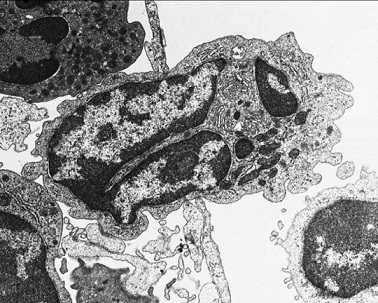
دیواره سینوزوئید و عبور سلولدر هر فرد سالم، روزانه بهازای هر کیلوگرم وزن بدن حدود دو میلیارد گلبول قرمز تولید میشود. این سلولها بدون ایجاد احساس درد از ناحیه اندوتلیالی عبور میکنند و وارد خون میشوند.
هموگلوبین از دو بخش تشکیل شده است: Heme و Globin.
در یک فرد ۷۰ کیلوگرمی که بهعنوان فرد نرمال یا Healthy Control در نظر گرفته میشود، حدود گلبول قرمز وجود دارد. هر گرم هموگلوبین ۳ تا ۴ میلیگرم آهن دارد؛ تزریق هر کیسه خون نیز حدود ۲۰۰ میلیگرم آهن وارد بدن میکند. هر گرم هموگلوبین میتواند ۱٫۳۴ میلیلیتر (1.34mL) اکسیژن جابهجا کند.
گروه هِم در انواع اصلی هموگلوبین از نظر ساختار یکسان است و حاوی یک اتم آهن دوظرفیتی (⁺Fe²) است که امکان اتصال برگشتپذیر اکسیژن را فراهم میکند.
Globin بخش پروتئینی هموگلوبین است که ساختاری تترامری (Tetramer) دارد؛ یعنی از دو جفت زنجیرهٔ پلیپپتیدی گلوبین تشکیل شده است. این چهار زنجیره بهصورت دو دایمر (Dimer) در کنار یکدیگر قرار میگیرند و هر دایمر شامل یک زنجیره از خانواده آلفا (α-like globin) و یک زنجیره از خانواده بتا (β-like globin) است. هر زنجیرهٔ گلوبین به یک گروه هِم متصل است؛ بنابراین، هر مولکول هموگلوبین دارای چهار گروه هِم و چهار اتم آهن دوظرفیتی است. در نتیجه، هر مولکول هموگلوبین میتواند حداکثر چهار مولکول اکسیژن را به خود متصل کند.
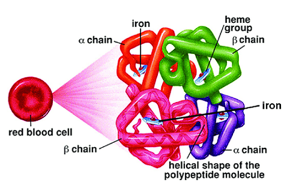
Hemoglobin Moleculeزنجیره بتا (β) دارای ۱۴۶ اسیدآمینه و زنجیره آلفا (α) دارای ۱۴۱ اسیدآمینه است. بهعبارت دیگر، زنجیره بتا ۵ اسیدآمینه بیشتر از زنجیره آلفا دارد.
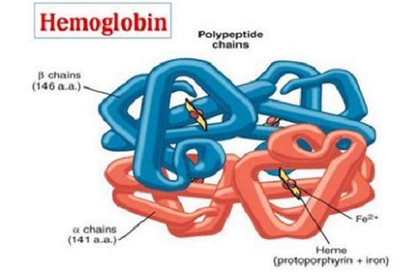
Heme از یک ساختار حلقوی به نام پورفیرین (Porphyrin) تشکیل شده است که از چهار حلقهٔ پیرول (Pyrrole) تشکیل شده و به همین دلیل در گروه تتراپیرولها (Tetrapyrroles) قرار میگیرد. یک یون آهن در مرکز این ساختار قرار دارد. آهن موجود در Heme عملکردی باید به حالت فرو یا دوظرفیتی (⁺Ferrous, Fe²) باشد. این یون آهن دارای شش جایگاه کئوردیناسیون است: چهار جایگاه به اتمهای نیتروژن حلقهٔ پورفیرین متصل هستند. جایگاه پنجم به باقیماندهٔ هیستیدین زنجیرهٔ گلوبین متصل میشود. جایگاه ششم برای اتصال برگشتپذیر مولکول اکسیژن (O₂) در دسترس است.
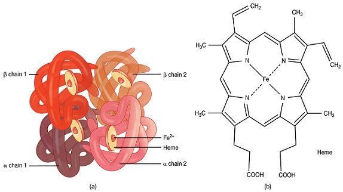
اتم آهن در هر زنجیرهٔ گلوبین، چه آلفا و چه بتا، به اسیدآمینهٔ هیستیدین (Histidine) متصل میشود. جایگاه این اسیدآمینه در زنجیرهٔ آلفا، پوزیشن ۸۷ (His87) و در زنجیرهٔ بتا، پوزیشن ۹۲ (His92) است. اگر آهن به اسیدآمینهای در موقعیتی نامناسب حتی اسیدآمینه مجاور متصل شود، ممکن است از حالت فرو (⁺Fe²) به حالت فریک (⁺Fe³) تبدیل شده و عملکرد طبیعی خود را از دست بدهد؛ زیرا برای اتصال مولکول اکسیژن (O₂)، باید یک جایگاه آزاد باقی بماند.
جایگاه هِم در گلوبین (Heme Pocket)
گروه Heme درون یک حفرهٔ آبگریز (Hydrophobic Pocket) در ساختار تاخوردهٔ هر زنجیرهٔ پلیپپتیدی گلوبین قرار میگیرد. این محیط پروتئینی به حفظ ساختار مناسب Heme کمک میکند و از آهن موجود در آن در برابر اکسیداسیون محافظت میکند.
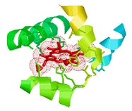
Heme Pocketتغییر زنجیرههای گلوبین در دوران جنینی و پس از تولد
در دوران رشد جنینی و پس از تولد، میزان بیان ژنهای زنجیرههای مختلف گلوبین تغییر میکند. این تغییرات باعث میشوند انواع هموگلوبین در مراحل مختلف زندگی تولید شوند.
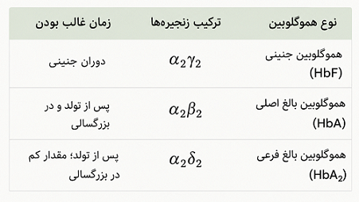
بیان ژنهای زنجیرههای هموگلوبین به ژنهای واقع در کروموزومهای ۱۶ و ۱۱ وابسته است. ژنهای زنجیرهٔ آلفا روی کروموزوم ۱۶ و ژنهای زنجیرهٔ بتا روی کروموزوم ۱۱ قرار دارند؛ بنابراین، دو خانوادهٔ ژنی آلفا و بتا وجود دارد. جهش در این ژنها میتواند منجر به بروز هموگلوبینوپاتی (Hemoglobinopathy) و تالاسمی (Thalassemia) شود.
نحوهٔ نمایش ژنها: ژنها و کروموزومها بهطور قراردادی از '5 به '3 نشان داده میشوند. در نمایش کلاسترهای ژنی معمولاً یک رشته یا یک هاپلوتایپ (Haplotype) نشان داده میشود، نه دو رشته. این شیوه نمایش در کتابها، مقالهها و نرمافزارهای پژوهشی نیز بهکار میرود. هنگام اشاره به کروموزوم همولوگ، از دو کروموزوم صحبت میشود، درحالیکه کروماتید (Chromatid) یکی از نسخههای طولی کروموزوم پس از همانندسازی DNA است.
این کلاستر روی کروموزوم ۱۶ قرار دارد و شامل ژنهای مرتبط با تولید زنجیرههای آلفا (α) و زتا (ζ) است. اگر از '5 به '3 پیش برویم، ترتیب ژنها چنین است:
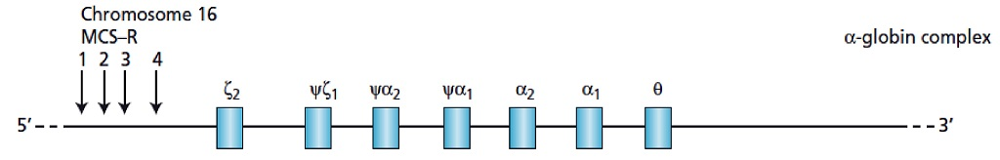
در هر کروموزوم دو ژن آلفا وجود دارد؛ بنابراین هر فرد در حالت طبیعی مجموعاً چهار ژن آلفا دارد. ژن α2 نسبت به α1 برونده بیشتری دارد، هرچند هر دو ژن زنجیرههای آلفاگلوبین مشابهی تولید میکنند.
این کلاستر روی کروموزوم ۱۱ قرار دارد و شامل ژنهای مرتبط با تولید زنجیرههای اپسیلون (ε)، گاما (γ)، دلتا (δ) و بتا (β) است. ترتیب ژنها از '5 به '3 چنین است:
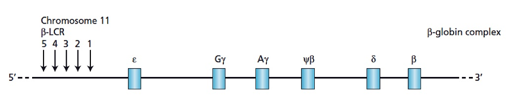
دو نوع ژن گاما وجود دارد: Gγ و Aγ. اگر اسیدآمینه ۱۳۶ گلیسین باشد، آن را Gγ مینامند (Glycine at position 136) و اگر آلانین باشد، Aγ (Alanine) نامیده میشود. از نظر عملکردی، تفاوت عمدهای در هموگلوبین ایجاد نمیشود اما در دوران جنینی Gγ بیشتر است و در مراحل بعد Aγ بیشتر دیده میشود.
علاوه بر پروموتر (Promoter) که در ناحیهٔ بالادست ژن و پیش از اگزونها قرار دارد، کلاسترهای ژنی گلوبین دارای عوامل تنظیمی گستردهتری هستند که در کنترل بیان ژنها نقش دارند:
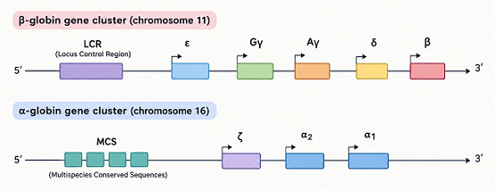
اختلال در LCR میتواند برونده کل ژنهای تحت کنترل آن را کاهش دهد و وضعیتی شبیه تالاسمی ایجاد کند.
آسیب به ژن بتا میتواند تالاسمی بتا و آسیب به ژنهای آلفا میتواند تالاسمی آلفا ایجاد کند.
برونده زنجیرههای پروتئینی آلفا و بتا از نظر بار الکتریکی (Charge) و موقعیت فضایی با یکدیگر سازگار است و زنجیرهها در کنار هم قرار میگیرند. پس از نزدیکشدن، پیوندهای هیدروژنی بین آنها شکل میگیرد.
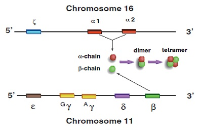
هموگلوبین بر اساس نوع زنجیرههای گلوبین تشکیلدهندهٔ خود، به انواع مختلفی تقسیم میشود:
در دوره رویانی (Embryonic period)، ریزمحیط کیسه زرده (Yolk sac) زمینه تولید هموگلوبینهای رویانی، از جمله Gower 2،Gower 1 و Portland را فراهم میکند. در دوره جنینی (Fetal period)، هموگلوبین جنینی HbFیا (α₂γ₂) تولید میشود.
بر اساس اصل مرکزی زیستشناسی مولکولی (Central Dogma)، اطلاعات ژنتیکی از DNA به RNA و سپس به پروتئین منتقل میشود. در این فرایند، DNA الگوی تولید RNA، از جمله RNA پیامرسان (mRNA)، است. mRNA ابتدا بهصورت نابالغ یا رونوشت اولیه (Primary mRNA) ساخته میشود و سپس طی فرایند پیرایش (Splicing)، اینترونها (Introns) حذف و اگزونها (Exons) به یکدیگر متصل میشوند تا mRNA بالغ تشکیل شود. ژنهای زنجیرههای گلوبین دارای سه اگزون و دو اینترون هستند. در مرحله بعد، mRNA طی فرایند ترجمه (Translation) به پروتئین تبدیل میشود. بنابراین، اطلاعات ژنتیکی در مسیری یکطرفه از DNA به RNA و سپس به پروتئین منتقل میشود.
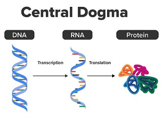
در دوران جنینی و هنگام تولد که ارگان اصلی خونسازی کبد بوده است، بیان ژنهای زنجیره گاما (γ-globin) بالاست و بخش عمده هموگلوبین نوزاد را HbF (α₂γ₂) تشکیل میدهد. هنگام تولد، ممکن است HbF حدود ۶۵ تا ۹۰ درصد هموگلوبین کل را شامل شود. همچنین در این دوره، میزان هموگلوبین و شمارش گلبولهای قرمز (RBC) معمولاً بالاتر است و اندازه متوسط آنها (MCV) نیز نسبت به بزرگسالان بیشتر است؛ بنابراین در هماتولوژی محدوده طبیعی (normal range) Hb، RBC و MCV در نوزادان با بزرگسالان متفاوت است.
هموگلوبین A₂ یا HbA₂ از دو زنجیره آلفا و دو زنجیره دلتا تشکیل شده است (α₂δ₂) و مقدار طبیعی آن در بزرگسالان معمولاً حدود ۱٫۵ تا ۳٫۵ درصد هموگلوبین کل است. در ترتیب ژنهای کلاستر کروموزوم ۱۱، ژن دلتا پیش از بتا قرار دارد. زنجیرههای دلتا و بتا از نظر عملکردی تفاوت زیادی ندارند، اما پروموتر دلتا کمفعالتر و پروموتر بتا فعالتر است؛ بنابراین برونده ژن دلتا کمتر و برونده بتا بیشتر است.
مقدار HbA₂ میتواند در بررسی بتا تالاسمی بهکار رود. در بتا تالاسمی، با کاهش تولید زنجیرههای بتا و کاهش HbA، سهم HbA₂ ممکن است افزایش یابد. در بررسی بالینی، مقدار HbA₂ برابر یا بالاتر از ۳٫۵ درصد میتواند احتمال Beta-thalassemia minor را افزایش دهد. برای بررسی بیشتر، انواع هموگلوبین موجود در خون از طریق روشهایی مانند الکتروفورز هموگلوبین یا HPLC تفکیک و اندازهگیری میشوند. مقدار طبیعی HbA₂ معمولاً ۱٫۵ تا ۳٫۵ درصد است. مقدار کمتر از ۱ درصد نیز میتواند در برخی موارد با آلفا تالاسمی همراه باشد. همچنین، شیوع آلفا تالاسمی در بسیاری از جمعیتها بیشتر از بتا تالاسمی است؛ البته این موضوع به جمعیت و منطقه جغرافیایی بستگی دارد.
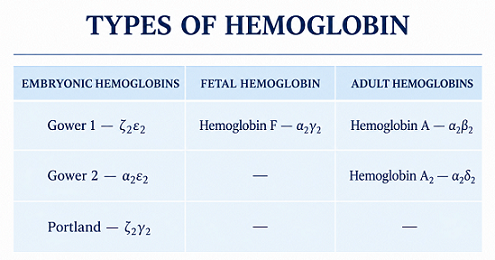
پس از آنکه DNA تولید mRNA را هدایت کرد و mRNA به گلوبین ترجمه شد، زنجیرههای گلوبین برای کاملشدن به Heme نیاز دارند. سنتز Heme در میتوکندری شروع میشود، در سیتوپلاسم ادامه مییابد و مجدداً به میتوکندری برمیگردد و در آنجا خاتمه پیدا میکند.
بر اساس نظریه همزیستی درونسلولی، میتوکندری از یک باکتری هوازی باستانی منشأ گرفته است که در طی تکامل با سلول میزبان همزیستی برقرار کرده و به اندامک تبدیل شده است. شباهتهای ژنتیکی و ساختاری میتوکندری با باکتریها از شواهد این نظریه هستند.
سنتز Heme در میتوکندری از گلیسین (Glycine) و سوکسینیل کوآ (Succinyl-CoA) آغاز میشود و بهصورت آبشار آنزیمی (Cascade) پیش میرود؛ محصول هر مرحله زمینه اثر آنزیم مرحله بعد را فراهم میکند.
1. تشکیل دلتا آمینولوولینیک اسید (ALA): گلیسین و سوکسینیل کوآ، تحتتأثیر دلتا آمینولوولینیک اسید سنتاز (ALA synthase / ALAS)، به دلتا آمینولوولینیک اسید (Delta-aminolevulinic acid / ALA) تبدیل میشوند. این مرحله در میتوکندری انجام میشود و به ویتامین B6 بهعنوان کوفاکتور نیاز دارد.
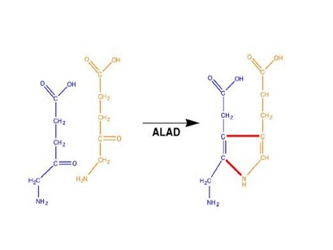
2. تشکیل پورفوبیلینوژن (PBG): ALA از میتوکندری به سیتوپلاسم منتقل میشود. در سیتوپلاسم دو مولکول ALA تحت تأثیر آنزیم ALA دهیدراتاز (ALA dehydratase) با خروج مولکول آب، یک مولکول پورفوبیلینوژن (Porphobilinogen؛ PBG) میسازند.
3. تشکیل هیدروکسیمتیلبیلان (HMB): چهار مولکول پورفوبیلینوژن، تحتتأثیر آنزیم پورفوبیلینوژن دآمیناز (Porphobilinogen deaminase) یا هیدروکسیمتیلبیلان سنتاز (Hydroxymethylbilane synthase)، به یک مولکول هیدروکسیمتیلبیلان (Hydroxymethylbilane) تبدیل میشوند. در این مرحله، گروههای آمینی جانبی بهصورت آمونیاک جدا میشوند.
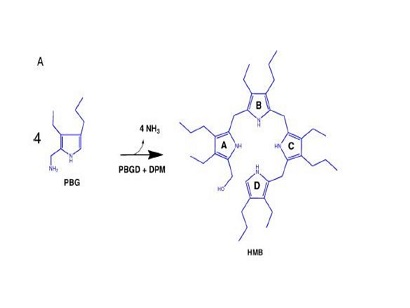
4. تشکیل یوروپورفیرینوژن III: هیدروکسیمتیلبیلان تحتتأثیر آنزیم یوروپورفیرینوژن III سنتاز (Uroporphyrinogen III synthase) به یوروپورفیرینوژن-III تبدیل میشود. (Uroporphyrinogen III)
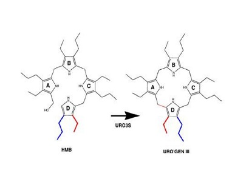
5. تشکیل کوپروپورفیرینوژن III: یوروپورفیرینوژن III تحتتأثیر آنزیم یوروپورفیرینوژن دکربوکسیلاز (Uroporphyrinogen decarboxylase) قرار میگیرد و مولکول CO₂ آزاد میشود. محصول این مرحله کوپروپورفیرینوژن III است. (Coproporphyrinogen III)
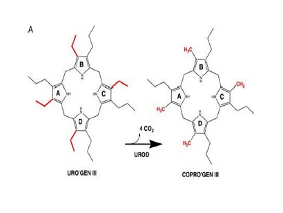
6. تشکیل پروتوپورفیرینوژن IX: کوپروپورفیرینوژن III از سیتوپلاسم به میتوکندری منتقل میشود. در آنجا، تحتتأثیر آنزیم کوپروپورفیرینوژن اکسیداز (Coproporphyrinogen oxidase)، اکسید میشود و به پروتوپورفیرینوژن ۹ (Protoporphyrinogen IX) تبدیل میشود.
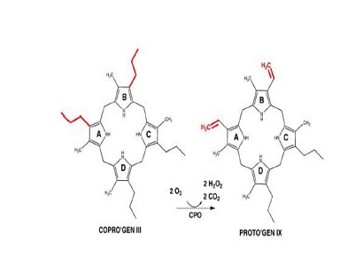
7. تشکیل پروتوپورفیرین IX: پروتوپورفیرینوژن IX تحتتأثیر آنزیم پروتوپورفیرینوژن اکسیداز (Protoporphyrinogen oxidase) اکسید میشود و پروتوپورفیرین IX (Protoporphyrin IX) را میسازد. این ترکیب دارای ساختار حلقوی تتراپیرولی است و هنوز آهن در حلقه آن وارد نشده است.
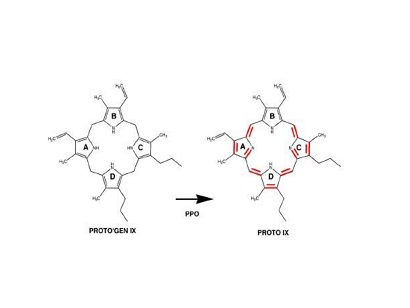
8. اتصال آهن و تشکیل هِم: آهن موردنیاز برای سنتز هِم از طریق جذب رودهای وارد خون میشود و عمدتاً بهوسیله ترانسفرین (Transferrin) به مغز استخوان منتقل میشود. در مغز استخوان، سلولهای اریتروئیدی آهن را دریافت میکنند و آن را برای سنتز هِم به میتوکندری میرسانند. ماکروفاژها نیز با بازیافت آهن گلبولهای قرمز پیر، منبع مهم دیگری برای تأمین آهن بدن هستند. در آخرین مرحله، آهن دوظرفیتی (Fe²⁺) به پروتوپورفیرین IX اضافه میشود و هِم (Heme) تشکیل میگردد. این واکنش بهوسیله آنزیم فروچلتاز (Ferrochelatase) کاتالیز میشود که به آن هِم سنتاز نیز گفته شده است.
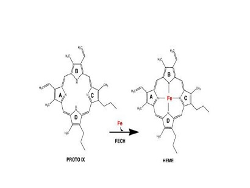
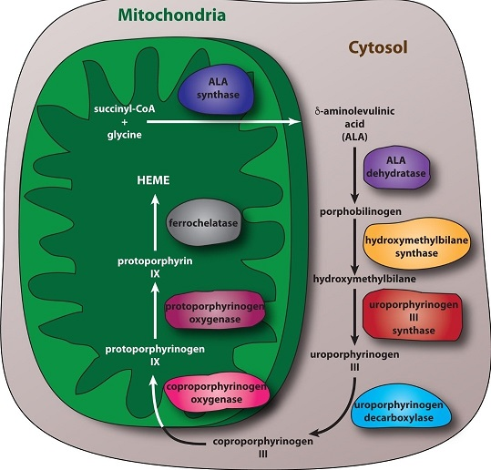
مسیر بیوسنتز هِمپس از سنتز Heme، این ترکیب با مهار بازخوردی آنزیم ALA سنتاز، تولید بیشتر هِم را مهار میکند. این تنظیم عمدتاً از طریق کاهش فعالیت و بیان آنزیم انجام میشود. همچنین، هِم از میتوکندری به محل سنتز پروتئین منتقل میشود و در تشکیل هموگلوبین، با زنجیرههای گلوبین ترکیب میشود.
مروری کوتاه: سنتز Heme فرایندی آنزیمی است که در میتوکندری شروع میشود، در سیتوپلاسم گسترش مییابد و برای کاملشدن به میتوکندری بازمیگردد.
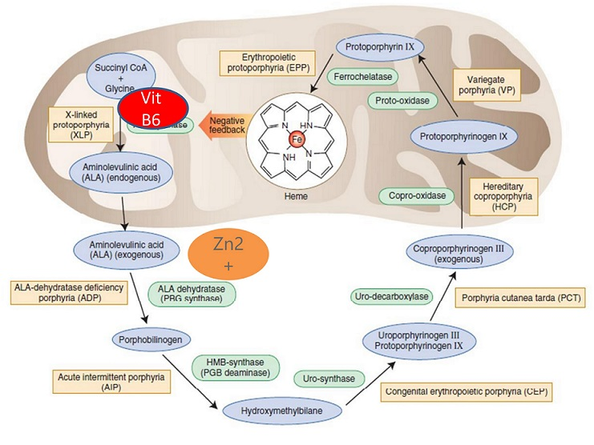
برای ساختار موردنظر Heme، ایزومر ۳ کوپروپورفیرینوژن و ایزومر ۹ پروتوپورفیرین لازماند و ایزومرهای دیگر برای این ساختار مناسب نیستند. برای ساخت یک مولکول هِم ۸ مولکول گلیسین و ۸ مولکول سوکسینیل کوآ نیاز است. سوکسینیل کوآ از محصولات چرخه کربس یا متابولیسم اسیدهای چرب (Fatty acids) است و در سلول برای ساخت Heme بهکار میرود.
اختلال در جابهجایی گلیسین برای ورود به میتوکندری یا در جابهجایی آهن به میتوکندری میتواند کمخونی سیدروبلاستیک (Sideroblastic anemia) ایجاد کند. در این وضعیت، آهن در دسترس است، اما نمیتواند به میتوکندری برسد و در ساخت Heme استفاده شود. این وضعیت با آنمی فقر آهن (Iron deficiency anemia) تفاوت دارد؛ در فقر آهن، آهن در دسترس نیست.
از مشاغل یا موقعیتهای پرخطر از نظر تماس با سرب میتوان به موارد زیر اشاره کرد:
سرب مسیر تولید پورفوبیلینوژن و تولید Heme را مختل میکند. سرب بر فروچلتاز و پورفوبیلینوژن سنتاز (Ferrochelatase /ALA dehydratase) اثر مهاری دارد.
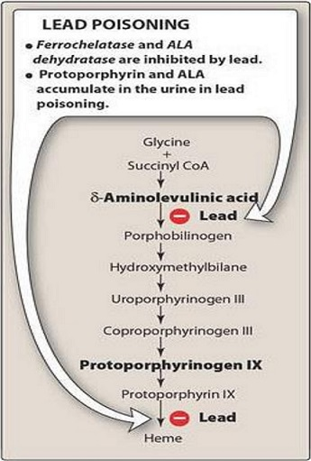
همچنین آنزیم ۵ پرایم پیریمیدیناز (Pyrimidine 5'-nucleotidase) را مهار میکند. این آنزیم در ارتباط با غشای گلبول قرمز، رشتههای RNA را از داخل سلول خارج میکند. با مهار آن بهوسیله سرب، RNA در گلبول قرمز باقی میماند و رسوب میکند؛ این حالت بازوفیلیک استیپلینگ (Basophilic stippling) نام دارد و در مسمومیت با سرب دیده میشود.
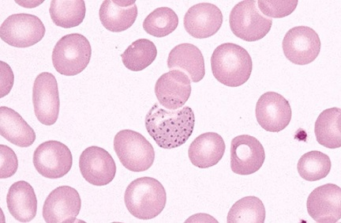
Basophilic stipplingدر مجموع، سه آنزیم مهار میشوند: دو آنزیم در مسیر سنتز Heme و یک آنزیم دخیل در خروج رشتههای RNA.
در پورفیریا ممکن است پوست به نور حساس (Photosensitive) شود. پوست باید پوشیده بماند و قرارگرفتن در معرض نور خورشید میتواند تاول (Bullae) و زخم (Scar) ایجاد کند. دفع مواد حدواسط از راه خون و ادرار میتواند رنگ ادرار را قرمز کند.
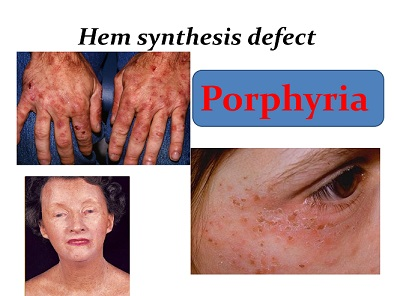
اختلال در مراحل اولیهٔ مسیر سنتز هِم بیشتر با حملههای (Attack) بیماری همراه است؛ درحالیکه اختلال در مراحل انتهایی میتواند باعث حساسیت به نور (Photosensitivity) و در برخی موارد حملههای بیماری شود.
تشخیص: معمولاً برای تشخیص پورفیریا، مواد حدواسط و رنگدانههای دفعشده در ادرار (Urine) بررسی میشوند. در اریتروپوئتیک پروتوپورفیریا (EPP؛ Erythropoietic protoporphyria)، بررسی پروتوپورفیرین گلبولهای قرمز اهمیت دارد و از پلاسما نیز میتوان استفاده کرد.
وراثت: پروتوپورفیریای وابسته به X با ژن ALAS2 مرتبط است. بسیاری از انواع دیگر پورفیریا اتوزومال غالب هستند، اما بعضی انواع اتوزومال مغلوباند.
متهموگلوبین زمانی تشکیل میشود که آهن موجود در هموگلوبین از حالت فرو (⁺Fe²) به حالت فریک (⁺Fe³) اکسید شود. در بدن بهطور طبیعی مقدار کمی متهموگلوبین تولید میشود، اما آنزیم متهموگلوبین ردوکتاز (Methemoglobin reductase) آهن ⁺Fe³ را دوباره به ⁺Fe² احیا میکند. اگر فعالیت این سیستم کافی نباشد، متهموگلوبین تجمع مییابد و متهموگلوبینمی (Methemoglobinemia) ایجاد میشود.
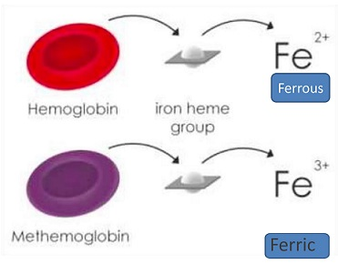
علائم: در متهموگلوبینمی ممکن است پوست و لبها به رنگ بنفش و سیاه متمایل شوند و خون ظاهری قهوهای رنگ پیدا کند. زبان و مخاطها نیز ممکن است سیانوتیک شوند.
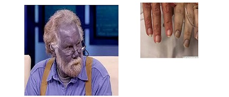
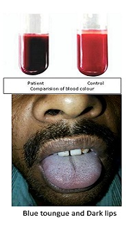
مقدار طبیعی متهموگلوبین معمولاً کمتر از ۱٫۵ درصد هموگلوبین کل است. در مقادیر بالای ۱۰ درصد ممکن است سیانوز (Cyanosis) ظاهر شود؛ شدت علائم به مقدار متهموگلوبین و شرایط فرد بستگی دارد. متهموگلوبین نمیتواند اکسیژن را بهطور طبیعی متصل کند و همچنین اتصال اکسیژن به بخشهای سالم هموگلوبین را محکمتر میکند؛ در نتیجه، اکسیژنرسانی به بافتها کاهش مییابد.
درمان: در موارد علامتدار، بسته به علت و شرایط بیمار، ممکن است از متیلن بلو (Methylene blue) استفاده شود. در متهموگلوبینمی ناشی از اختلال آنزیمی، این دارو میتواند مؤثر باشد؛ اما در برخی انواع مادرزادی ناشی از جهش زنجیرهٔ گلوبین (مانند هموگلوبین M)، معمولاً پاسخ مناسبی به متیلن بلو داده نمیشود و رویکرد درمانی متفاوت است.
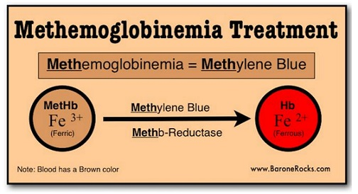
سولفهموگلوبین در اثر ورود گوگرد به ساختار هموگلوبین تشکیل میشود. این تغییر باعث میشود رنگ خون متمایل به سبز (Greenish) یا سبز تیره دیده شود.
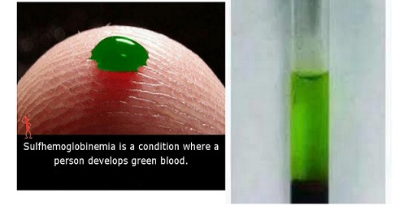
در این حالت، گوگرد با ساختار هِم واکنش میدهد و ترکیبی پایدار ایجاد میکند. سولفهموگلوبین توانایی طبیعی حمل اکسیژن را ندارد و تشکیل آن میتواند باعث سیانوز شود.
کربوکسیهموگلوبین زمانی تشکیل میشود که گاز منوکسید کربن (CO) به هموگلوبین متصل شود. میل اتصال منوکسید کربن به هموگلوبین بسیار بیشتر از اکسیژن است؛ بنابراین، هم اتصال اکسیژن به هموگلوبین کاهش مییابد و هم اکسیژنرسانی به بافتها مختل میشود.
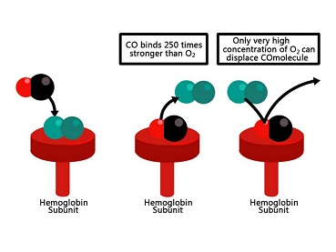
علائم مسمومیت: سردرد، سرگیجه، گیجی، تهوع و در موارد شدید کاهش سطح هوشیاری و مرگ. گاهی رنگ خون در مسمومیت با CO قرمز آلبالویی (Cherry red) توصیف میشود.
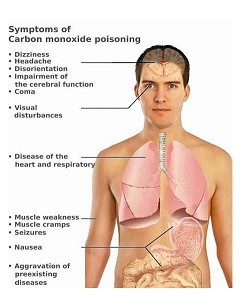
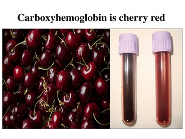
امروزه برای تشخیص مسمومیت با منوکسید کربن، میزان کربوکسیهموگلوبین خون با دستگاه کو-اکسیمتر (Co-oximeter) در نمونه خون شریانی ABG (Arterial Blood Gas) یا نمونه خون وریدی VBG (Venous Blood Gas) اندازهگیری میشود.
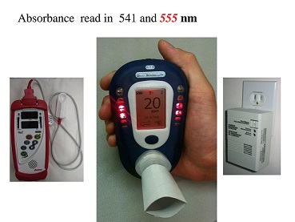
در تشکیل هموگلوبین گلیکوزیله، اتصال قند به برخی اسیدهای آمینه مانند سرین (Serine)، آسپاراژین (Asparagine) و هیدروکسیلیزین (Hydroxylysine) نیز مطرح میشود.
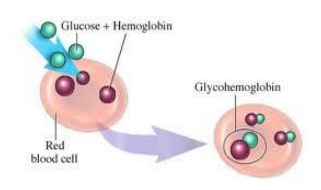
تفکیک انواع هموگلوبین گلیکوزیله
مقدار طبیعی HbA1c تا ٪۵٫۵، محدودهٔ ۵٫۵ تا ۶٫۵ درصد نشاندهندهٔ پیشدیابت (Prediabetic) و مقدار بالاتر از ٪۶٫۵ در محدودهٔ تشخیصی دیابت (Diabetic) قرار میگیرد و نیاز به بررسی و تصمیمگیری درمانی دارد.
| ترتیب | مرحله تمایز |
|---|---|
| ۱ | پرونورموبلاست (Pronormoblast) |
| ۲ | بازوفیلیک نورموبلاست (Basophilic normoblast) |
| ۳ | پلیکروماتوفیلیک نورموبلاست (Polychromatophilic normoblast) |
| ۴ | ارتوکروماتوفیلیک نورموبلاست (Orthochromatophilic normoblast) |
| ۵ | رتیکولوسیت (Reticulocyte) |
| ۶ | گلبول قرمز بالغ (Erythrocyte) |
| ویژگی در طول تمایز | تغییر توصیفشده |
|---|---|
| هسته | کوچکتر و فشردهتر میشود؛ فعالیتش کاهش مییابد و در مرحله ارتوکروماتوفیلیک نورموبلاست از سلول بیرون انداخته میشود. |
| سیتوپلاسم | رنگ آن با ساختهشدن هموگلوبین از آبی بهسمت نارنجی و در نهایت نارنجی تا قرمز تغییر میکند. |
| رتیکولوسیت | پس از بیرونانداختن هسته، سلول ابتدا رتیکولوسیت است و سپس به گلبول قرمز بالغ تبدیل میشود. |
| کمیت | مقدار یا توصیف |
|---|---|
| طول عمر گلبول قرمز | حدود ۸۰ تا ۱۲۰ روز |
| مسافت طیشده در طول عمر | نزدیک به ۲۰۰ کیلومتر از عروق |
| تولید روزانه بهازای هر کیلوگرم وزن بدن در فرد سالم | حدود دو میلیارد گلبول قرمز |
| تولید روزانه برای فرد ۵۰ کیلوگرمی | حدود ۱۰۰ میلیارد گلبول قرمز |
| میانگین ضخامت اتصالات اندوتلیالی | کمتر از ۰٫۲ میکرومتر (0.2 µm) |
| ویژگی یا کمیت | مقدار یا توصیف |
|---|---|
| بخشهای هموگلوبین | Heme و Globin |
| شمار گلبول قرمز در فرد ۷۰ کیلوگرمی Healthy Control | حدود |
| آهن در هر گرم هموگلوبین | ۳ تا ۴ میلیگرم |
| آهن واردشده با تزریق هر کیسه خون | حدود ۲۰۰ میلیگرم |
| اکسیژن قابلجابهجایی بهازای هر گرم هموگلوبین | ۱٫۳۴ میلیلیتر (1.34 mL) |
| زنجیره | کروموزوم | تعداد اسیدآمینه |
|---|---|---|
| آلفا | ۱۶ | ۱۴۱ |
| بتا | ۱۱ | ۱۴۶ |
| بخش یا جایگاه | توصیف |
|---|---|
| Heme | چهار حلقه پیرول دارد؛ به همین دلیل تتراپیرول (Tetrapyrrole) نامیده میشود و آهن در مرکز آن است. |
| آهن در Heme | ⁺Fe² دارای شش جایگاه کئوردیناسیون است. چهار جایگاه به اتمهای نیتروژن حلقهٔ پورفیرین متصل هستند. |
| اتصال به زنجیره | یک ظرفیت به زنجیره آلفا یا بتا متصل میشود. |
| اتصال به اکسیژن | ظرفیت دیگر برای اتصال به مولکول O2 آزاد است؛ آهن به O2 متصل میشود، نه به یک اتم منفرد O. |
| جایگاه هیستیدین | در آلفا: پوزیشن ۸۷ (His87)؛ در بتا: پوزیشن ۹۲ (His92). |
| کلاستر ژنی | نکات ذکرشده |
|---|---|
| کروموزوم ۱۶ | در هر رشته دو ژن آلفا وجود دارد؛ هر فرد چهار ژن آلفا دارد. α2 نسبت به α1 برونده بیشتری دارد، هرچند هر دو آلفاگلوبین مشابهی تولید میکنند. برخی جایگاهها بهصورت Pseudogene نشان داده شدهاند. |
| کروموزوم ۱۱ | دو نوع ژن گاما، Gγ و Aγ، وجود دارد. Gγ دارای گلیسین در پوزیشن ۱۳۶ و Aγ دارای آلانین است. در دوران جنینی Gγ بیشتر است و در مراحل بعد Aγ بیشتر دیده میشود. |
| عامل یا اختلال | ارتباط ذکرشده |
|---|---|
| LCR (Locus Control Region) | عامل کنترلکننده کلاستر ژنهای بتا؛ اختلال در آن میتواند برونده کل ژنهای تحت کنترلش را کاهش دهد و وضعیتی شبیه تالاسمی ایجاد کند. |
| MCS (Multispecies Conserved Sequence) | عامل کنترلکننده ژنهای آلفا. |
| آسیب به ژن بتا | میتواند تالاسمی بتا ایجاد کند. |
| آسیب به ژنهای آلفا | میتواند تالاسمی آلفا ایجاد کند. |
| نوع هموگلوبین | ترکیب زنجیرهها | دوره یا توصیف ذکرشده |
|---|---|---|
| HbA | α2β2 | هموگلوبین بالغ |
| HbA2 | α2δ2 | — |
| HbF | α2γ2 | در دوره جنینی ساخته میشود. |
| Gower 1، Gower 2 و Portland | — | هموگلوبینهای رویانی؛ ساختهشدن آنها بهوسیله ریزمحیط کیسه زرده |
| مرحله | توصیف |
|---|---|
| DNA به RNA | DNA تولید RNA، ازجمله mRNA، را کنترل میکند. |
| Primary mRNA به mRNA بالغ | اینترونها حذف و اگزونها به هم متصل میشوند. |
| ژنهای زنجیرههای گلوبین | سه اگزون و دو اینترون دارند. |
| RNA به پروتئین | mRNA ترجمه (Translation) میشود و پروتئین میسازد. |
| جهت انتقال اطلاعات | DNA به RNA و سپس پروتئین؛ مسیر یکطرفه است. |
| ویژگی | نوزاد | بزرگسال |
|---|---|---|
| بیان ژنهای گاما | ابتدا زیاد است. | — |
| سهم HbF هنگام تولد | ممکن است ۶۵ تا ۹۰ درصد هموگلوبین باشد. | — |
| شمارش RBC و اندازه گلبول قرمز | در این دوره بالاست؛ گلبولها از گلبولهای قرمز بزرگسالان بزرگترند. | کمتر/کوچکتر نسبت به نوزاد |
| مورد | مقدار یا ارتباط ذکرشده |
|---|---|
| HbA2 طبیعی | ۱٫۵ تا ۳٫۵ درصد |
| HbA2 برابر یا بالاتر از ۳٫۵ درصد | احتمال Beta thalassemia minor را بالا میبرد. |
| HbA2 کمتر از ۱ درصد | نشانهای که میتواند با آلفا تالاسمی همراه باشد. |
| تالاسمی بتا | با کاهش HbA نسبت به مقدار HbA2، سهم HbA2 افزایش مییابد. |
| پروموتر دلتا و بتا | پروموتر دلتا کمفعالتر و پروموتر بتا فعالتر است؛ برونده ژن دلتا کمتر و برونده بتا بیشتر است. |
| شیوع آلفا و بتا تالاسمی | شیوع آلفا تالاسمی در جامعه بیشتر از بتا تالاسمی عنوان شد. |
| مرحله | محل | ماده ورودی و محصول یا تغییر | آنزیم یا نکته ذکرشده |
|---|---|---|---|
| ۱ | میتوکندری | گلیسین + سوکسینیل کوآ به ALA | ALA synthase / ALAS |
| ۲ | سیتوپلاسم | دو مولکول ALA با خروج یک مولکول آب به PBG | علت حضور در سیتوپلاسم اندازه آنزیمها و نبود ناقل لازم برای بازگشت ALA |
| ۳ | سیتوپلاسم | چهار مولکول PBG به Uroporphyrinogen | Uroporphyrinogen synthase؛ Synthase از Synthetase متمایز است. |
| ۴ | سیتوپلاسم | Uroporphyrinogen با از دستدادن یک CO2 به Coproporphyrinogen | Uroporphyrinogen decarboxylase |
| ۵ | میتوکندری | Coproporphyrinogen اکسید میشود به Protoporphyrinogen IX | کوپروپورفیرینوژن ناقل ورود به میتوکندری دارد. |
| ۶ | میتوکندری | Protoporphyrinogen IX اکسید میشود به Protoporphyrin IX | ترکیب چهارحلقهای است، اما هنوز آهن ندارد. |
| ۷ | میتوکندری | آهن با Protoporphyrin IX پیوند مییابد به Heme | Ferrochelatase یا Heme synthetase |
| ویژگی مسیر سنتز Heme | توصیف |
|---|---|
| محل آغاز | میتوکندری |
| ادامه مسیر | سیتوپلاسم |
| محل پایان | میتوکندری |
| مواد لازم برای یک مولکول Heme | ۸ مولکول گلیسین و ۸ مولکول سوکسینیل کوآ |
| ایزومرهای لازم برای ساختار موردنظر | ایزومر ۳ کوپروپورفیرینوژن و ایزومر ۹ پروتوپورفیرین |
| تنظیم بازخوردی منفی | از تولید بیشتر Heme جلوگیری میکند. |
| سرنوشت Heme پس از ساخت | از میتوکندری خارج میشود و به زنجیرههای گلوبین متصل میشود. |
| منشأ سوکسینیل کوآ | از محصولات چرخه کربس یا متابولیسم اسیدهای چرب (Fatty acids) است. |
| شاخص | Iron deficiency anemia | Sideroblastic anemia |
|---|---|---|
| SI (Serum Iron) | پایین | بالا |
| TIBC | بالا | پایین |
| وضعیت ذخیره آهن | فریتین پایین | ذخیره آهن وجود دارد، اما آهن قابلاستفاده نیست |
| مشاغل یا موقعیتهای پرخطر برای تماس با سرب |
|---|
| صنعت چاپ و حروفچینی با سرب |
| نقاشی و رنگآمیزی ساختمان، بهعلت وجود سرب در رنگ |
| باتریسازی |
| افسران راهنمایی و رانندگی در معرض بنزین سربدار |
| استفاده از برخی لوازم آرایشی |
| مصرف تریاکی که با سرب مخلوط شده باشد |
| آنزیم مهارشده بهوسیله سرب | ارتباط یا پیامد ذکرشده |
|---|---|
| فروچلتاز (Ferrochelatase) | در مسیر سنتز Heme؛ سرب تولید Heme را مختل میکند. |
| پورفوبیلینوژن سنتاز (ALA dehydratase / PBG synthase) | در مسیر سنتز Heme؛ سرب تولید پورفوبیلینوژن را مختل میکند. |
| ۵ پرایم پیریمیدیناز (Pyrimidine 5'-nucleotidase) | در ارتباط با خروج رشتههای RNA از گلبول قرمز؛ مهار آن باعث باقیماندن و رسوب RNA میشود و Basophilic stippling دیده میشود. |
| ویژگی یا مورد | توصیف مطرحشده در کلاس |
|---|---|
| اختلال در مراحل اولیه مسیر | بیشتر با حملههای (Attack) بیماری همراه است. |
| اختلال در مراحل انتهایی مسیر | میتواند با حساسیت نوری و حمله همراه باشد. |
| روش معمول بررسی تشخیصی | رنگدانههای دفعشده در ادرار (Urine) بررسی میشوند. |
| استثنا در نمونه مورد استفاده | در EPP از گلبول قرمز یا پلاسما استفاده میشود. |
| وراثت مطرحشده | ALAS2 بهعنوان X-linked و سایر موارد بهعنوان اتوزومال غالب مطرح شدند. |
| مورد | توصیف |
|---|---|
| تشکیل متهموگلوبین | تبدیل آهن هموگلوبین به +Fe3 |
| سیستم احیاکننده | Methemoglobin reductase آهن +Fe3 را احیا میکند. |
| پیامد کمبود ظرفیت سیستم | تجمع متهموگلوبین |
| یافتههای ظاهری ذکرشده | زبان ممکن است بنفش، لبها سیاه و خون قهوهایرنگ شود. |
| مقدار طبیعی | کمتر از ۱٫۵ درصد هموگلوبین کل |
| بالاتر از ۱۰ درصد | فرد ممکن است سیانوتیک شود؛ متهموگلوبین عملکرد حمل اکسیژن ندارد. |
| درمان مطرحشده | در اختلال آنزیمی میتوان از Methylene blue استفاده کرد؛ اگر علت جهش ژنتیکی زنجیره گلوبین باشد، متیلن بلو کاربردی ندارد. |
| نوع هموگلوبین پاتولوژیک یا تغییریافته | ارتباط یا توصیف ذکرشده | رنگ یا پیامد ذکرشده |
|---|---|---|
| Methemoglobin | آهن به Fe3+ تبدیل شده است؛ Methemoglobin reductase آن را احیا میکند. | عملکرد حمل اکسیژن ندارد؛ در متهموگلوبینمی زبان ممکن است بنفش، لبها سیاه و خون قهوهایرنگ شود. |
| Sulfhemoglobin | مسمومیت با گوگرد | رنگ هموگلوبین مایل به سبز (Greenish) میشود و عملکرد حمل اکسیژن ندارد. |
| Carboxyhemoglobin | در مسمومیت با منوکسید کربن (CO) تشکیل میشود. | رنگ آلبالویی (Cherry red)؛ گیجی، تهوع و خفگی بافتی از علائم عمومی ذکرشدهاند. |
| HbA1c | قند به هموگلوبین متصل شده است. | مقدار آن برای دستهبندی نرمال، پیشدیابت و دیابت ذکر شد. |
| نوع هموگلوبین | ماده متصلشونده |
|---|---|
| HbA1a | گلوکز ۶-فسفات |
| HbA1b | گالاکتوز و فروکتوز |
| HbA1c | گلوکز |
| مقدار HbA1c | عنوان ذکرشده |
|---|---|
| تا ۵٫۵ درصد | نرمال |
| ۵٫۵ تا ۶٫۵ درصد | پیشدیابت (Pre-diabetic) |
| بالاتر از ۶٫۵ درصد | دیابت (Diabetic)؛ نیاز به درمان |
مراحل تمایز اریتروئیدی را بهترتیب نام ببرید و تغییر رنگ سیتوپلاسم را در این مسیر توضیح دهید.
مراحل عبارتاند از: پرونورموبلاست، بازوفیلیک نورموبلاست، پلیکروماتوفیلیک نورموبلاست، ارتوکروماتوفیلیک نورموبلاست، رتیکولوسیت و گلبول قرمز بالغ. سیتوپلاسم سلولهای نارس آبیرنگ است و با ساختهشدن هموگلوبین، در رنگآمیزی رایت بهتدریج از آبی بهسمت نارنجی و در نهایت به نارنجی تا قرمز تغییر میکند.
ترکیب زنجیرهای HbA، HbA2 و HbF را بنویسید و دورهای را که برای HbF ذکر شده است مشخص کنید.
HbA از α2β2 و HbA2 از α2δ2 و HbF از α2γ2 تشکیل میشود. HbF در دوره جنینی ساخته میشود.
مسیر سنتز Heme از گلیسین و سوکسینیل کوآ تا تشکیل Heme را بهصورت مرحلهای شرح دهید و تغییر محل مسیر را بیان کنید.
مسیر در میتوکندری با تبدیل گلیسین و سوکسینیل کوآ به ALA بهوسیله ALA synthase / ALAS آغاز میشود. ALA به سیتوپلاسم میرود و دو مولکول آن با خروج آب، PBG میسازند. چهار PBG به Uroporphyrinogen تبدیل میشوند؛ سپس با از دستدادن CO2، Coproporphyrinogen تشکیل میشود. Coproporphyrinogen به میتوکندری بازمیگردد و بهترتیب به Protoporphyrinogen IX و Protoporphyrin IX تبدیل میشود. در مرحله نهایی، آهن با Protoporphyrin IX پیوند مییابد و Heme ساخته میشود. بنابراین، مسیر در میتوکندری شروع میشود، در سیتوپلاسم ادامه مییابد و در میتوکندری پایان میگیرد.
آنمی فقر آهن و آنمی سیدروبلاستیک را بر اساس SI، TIBC و وضعیت ذخیره آهن مقایسه کنید.
در آنمی فقر آهن، SI پایین، TIBC بالا و فریتین پایین است. در آنمی سیدروبلاستیک، SI بالا و TIBC پایین است و ذخیره آهن وجود دارد، اما آهن قابلاستفاده نیست.
سرب چگونه میتواند به Basophilic stippling منجر شود؟ سه آنزیمی که با مسمومیت سرب مهار میشوند را نام ببرید.
سرب Pyrimidine 5'-nucleotidase را مهار میکند؛ درنتیجه، RNA از داخل گلبول قرمز خارج نمیشود، در سلول باقی میماند و رسوب میکند که Basophilic stippling نام دارد. سه آنزیم مهارشده عبارتاند از فروچلتاز، پورفوبیلینوژن سنتاز (ALA dehydratase / PBG synthase) و Pyrimidine 5'-nucleotidase.
کدام مرحله بلافاصله پس از ارتوکروماتوفیلیک نورموبلاست قرار میگیرد؟
پس از ارتوکروماتوفیلیک نورموبلاست، رتیکولوسیت قرار میگیرد.
کدام جفت، جایگاه ژنی و تعداد اسیدآمینه زنجیره آلفا را درست نشان میدهد؟
ژنهای آلفا روی کروموزوم ۱۶ قرار دارند و زنجیره آلفا ۱۴۱ اسیدآمینه دارد.
ترکیب زنجیرهای HbA2 کدام است؟
HbA2 از دو زنجیره آلفا و دو زنجیره دلتا (α2δ2) تشکیل میشود.
کدام عامل بهعنوان کنترلکننده کلاستر ژنهای بتا معرفی شده است؟
LCR (Locus Control Region) عامل کنترلکننده کلاستر ژنهای بتا معرفی شده است.
کدام گزینه ترتیب محلهای سنتز Heme را درست بیان میکند؟
سنتز Heme در میتوکندری آغاز میشود، در سیتوپلاسم ادامه مییابد و برای پایان به میتوکندری بازمیگردد.
در Sideroblastic anemia، کدام وضعیت برای آهن ذکر شده است؟
در Sideroblastic anemia ذخیره آهن وجود دارد، اما آهن قابلاستفاده نیست؛ SI بالا و TIBC پایین ذکر شده است.
Basophilic stippling در اثر کدام تغییر ایجاد میشود؟
مهار Pyrimidine 5'-nucleotidase بهوسیله سرب باعث باقیماندن و رسوب RNA در گلبول قرمز میشود.
کدام مقدار بهعنوان محدوده طبیعی HbA2 ذکر شده است؟
مقدار طبیعی HbA2 برابر ۱٫۵ تا ۳٫۵ درصد ذکر شده است.
کدام مورد درباره متهموگلوبین درست است؟
متهموگلوبین هنگامی تشکیل میشود که آهن هموگلوبین به Fe3+ تبدیل شود و عملکرد حمل اکسیژن ندارد.
در HbA1b، کدام مواد متصل میشوند؟
در تفکیک انواع ذکرشده، گالاکتوز و فروکتوز به HbA1b متصل میشوند.
ادیتور: الهه کشاورزنژاد
منابع استفادهشده:
برآورد تقریبی تکمیل محتوا: حدود ۱۰۰٪ از محتوای ارائهشده در متن پالایششده بازتاب یافته است؛ این برآورد تضمین ریاضیِ کاملبودن نیست.